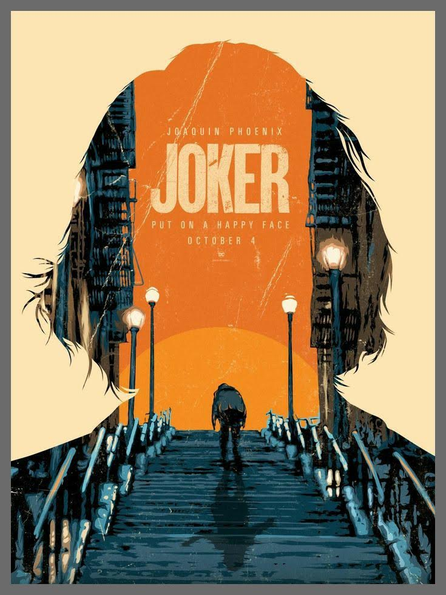
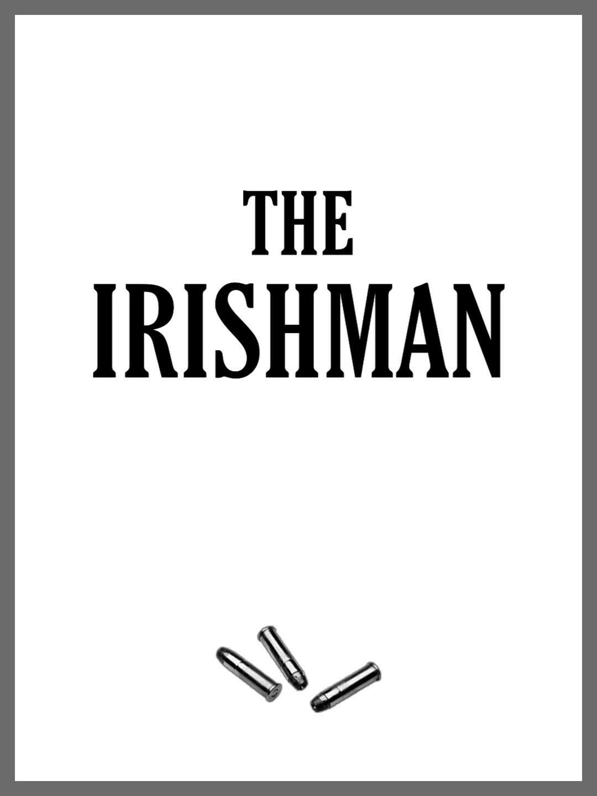
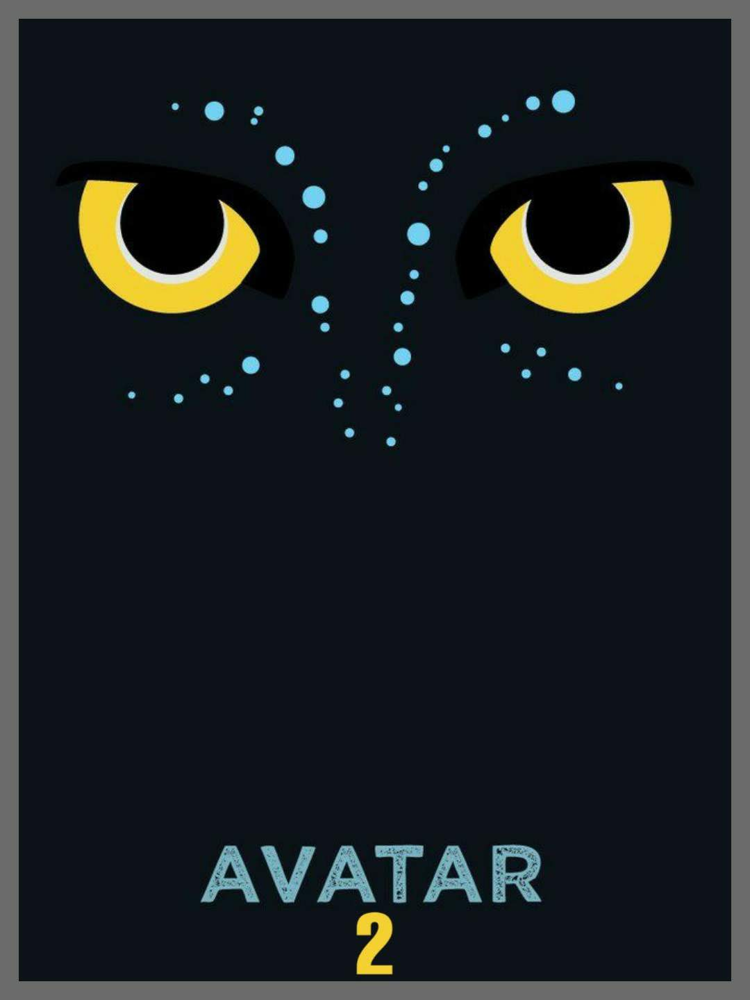

JOKER
18 | 2h 2min | Crime, Drama, Thriller | 3 October 2019 (Brazil)
Director: Todd Phillips
Writers: Todd Phillips and Scott Silver
Stars: Joaquin Phoenix, Zazie Beetz, Robert De Niro e outros
Premise: In 1981, Arthur Fleck (Joker), a failed stand-up comedian, turns to a life of crime and chaos in Gotham City.
THE IRISHMAN
18 | 3h 30min | Biography, Crime, Drama | 27 November 2019 (Brazil)
Director: Martin Scorsese
Writers: Charles Brandt and Steven Zaillian
Stars: Robert De Niro, Al Pacino, Joe Pesci e outros
Premise: The Irishman is the story of Frank Sheeran, a mob hitman and World War II vet who develops his skills during his service in Italy. Now an old man, he reflects on the events that defined his career as a hitman, particularly the role he played in the disappearance of labor leader Jimmy Hoffa, his longtime friend, and his involvement with the Bufalino crime family.
THE KINGSMAN
12 | Action, Adventure, Comedy | 13 February 2020 (Brazil)
Director: Matthew Vaughn
Writers: Matthew Vaughn and Jane Goldman
Stars: Ralph Fiennes, Harris Dickinson, Gemma Arterton e outros
Premise:As a collection of history's worst tyrants and criminal masterminds gather to pilot a war to wipe out millions, one man must race against time to stop them .
AVATAR 2
12 | Action, Adventure, Fantasy | 17 Decembr 2021 (Brazil)
Director: James Cameron
Writers: James Cameron and Josh Friedman
Stars: Zoe Saldana, Sam Worthington, Stephen Lang e outros